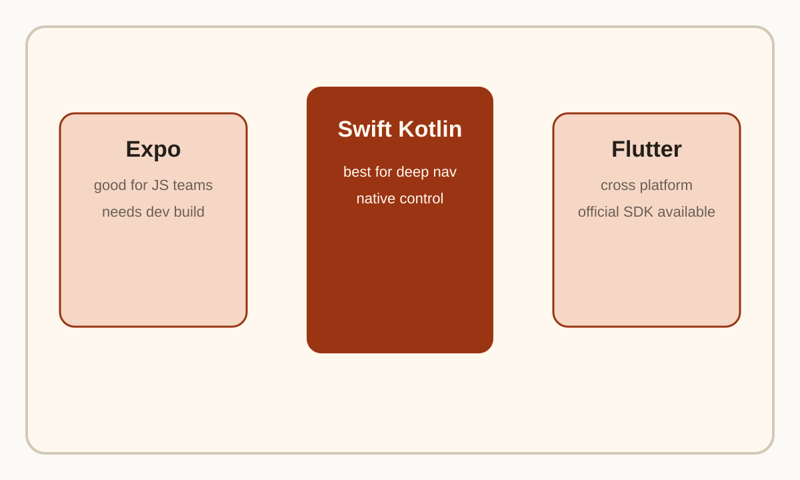
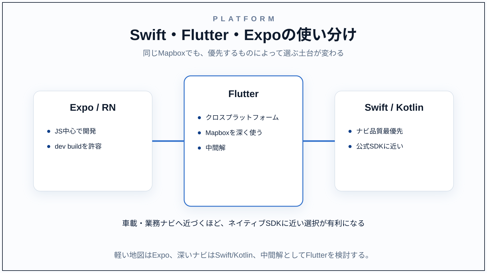

Question Note
MapboxとExpoの親和性

結論から言うと、MapboxとExpoの相性は悪くはないが、Expo Go のまま楽に使える種類の組み合わせではない です。MapboxはネイティブSDKを土台にしているため、Expoで使うなら development build や prebuild 前提で考えるのが現実的です。
まず押さえるべき点
- Expo Go ではカスタム native code を含むライブラリはそのまま使えない
- Expo でも development build を使えば native ライブラリを組み込める
- MapboxのReact Native向け利用は、公式FAQ上では iOS/Android公式SDKを包む React Native wrapper という位置付け
Expoが向くケース
- チームが React Native / Expo に慣れている
- 地図表示やピン表示、簡易ルート表示が中心
- Mapbox を使うが、深い native カスタマイズは限定的
Expoが重くなるケース
- 本格的な turn-by-turn ナビを作る
- 音声案内、進捗監視、再ルート、独自 native UI を深く触る
- Mapboxまわりの不具合を native 側まで追う必要がある
Swift や Flutter のほうがよいか
これは要件次第です。実務感としては次の整理が妥当です。
| 選択肢 | 向く状況 | コメント |
|---|---|---|
| Swift / Kotlin ネイティブ | ナビ品質最優先 | Mapbox公式SDKに最も近く、制御しやすい |
| Flutter | クロスプラットフォームで地図を深く使いたい | Mapbox公式Flutter SDKがある |
| Expo / React Native | JS中心で開発しつつ native build も許容できる | Expo Go ではなく dev build 前提で考える |
実務的な判断
単純な地図UIや検索中心ならExpoでも十分戦えます。 ただし、車載ナビ品質や業務車両向けナビまで踏み込むなら、Swift/Kotlinネイティブのほうが判断も保守もまっすぐです。 Flutterはその中間で、クロスプラットフォームのままMapboxを深く使いたい場合の有力候補です。
この比較のうち、「ExpoよりSwiftがよいか」という結論部分は一次情報の直接記述ではなく、 Expoが native build 前提であること、Mapboxの中核SDKが iOS/Android ネイティブ中心であることからの実装判断です。
要点
ExpoでもMapboxは使えますが、楽なのは Expo Go ではなく development build の世界です。 軽い地図体験ならExpo、深いナビ体験ならSwift/Kotlin、クロスプラットフォームで機能を取りたいならFlutter、 という見方が現実に近いです。
